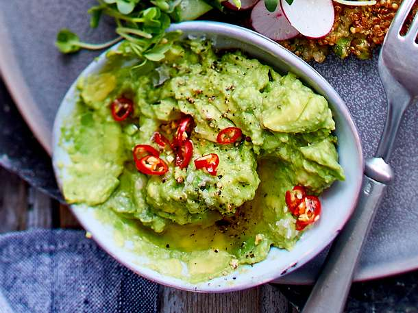

Guacamole

Beschreibung
Guacamole
Zutaten
- 1 Avocado
- Cherrytomaten
- Knoblauch granuliert
- Salz, Pfeffer
- Limettensaft
Anleitung
- Die Avocado mit der Gabel zerkleinern und geschnittene Tomatenstücke zugeben.
- Mit Salz, Pfeffer, Knoblauch würzen und Limettensaft hinzugeben.